PY_NTNDA_Viewer¶
Author: Marty Kraimer
Date: 2020.11.17
Contents
Overview¶
PY_NTNDA_Viewer is Python code that is similar to the Java EPICS_NTNDA_Viewer that comes with areaDetector.
It is available in ADViewers
It is a viewer for images obtained from an areaDetector pvAccess channel that provides an NTNDArray.
There are currently 2 versions:
- P4P_NTNDA_Viewer.py This uses p4p.
- PVAPY_NTNDA_Viewer.py This uses pvaPy.
Both are supported on Windows, Mac OSX, and Linux.
Required Python Modules¶
You must have python3 and pip installed.
The other python modules can be installed via pip install …
For example issue the command:
sudo pip install numpy
The following is a list of modules required by PY_NTNDA_Viewer
- numpy
- matplotlib
- PyQt5
- PyQt5-sip
- QtPy
- p4p and/or pvapy
Mac users will need to install pvapy via conda:
conda install -c epics pvapy
pip install -r requirements.txt
User Interface¶
When either version is started the following control window appears:
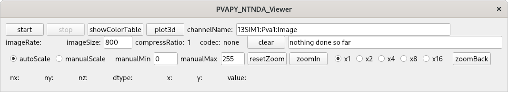When start is pressed the following appears:
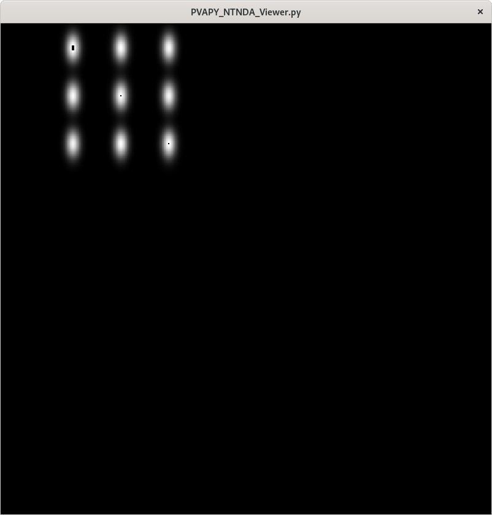First row of control window¶
- start Clicking this button starts communication with the server.
- stop Clicking this button stops communication with the server.
- showColorTable Clicking this brings up the ColorTable window. See below for details.
- plot3d Clicking on this brings up a 3d image window. See below for examples.
- channelName This is the name of the channel that provides the NTNDArray. When in stopped mode a new channel name can be specified.
Second row of control window¶
- imageRate This shows the number of images/second that are being displayed. Note that this is normally less than the number of images the server is producing.
- imageSize This specifies the maximum of width and height for the image display.
- compressRatio If image is compressed, this shows the compression ratio.
- codec The compression type. none means no compression.
- clear Clear the following status window.
Third row of control window¶
- autoScale image pixel values are scaled.
- manualScale image pixel values are scaled via manualMin and manualMax
- manualMin minimum value for manual scaling.
- manualMax maximuum value for manual scaling.
- resetZoom revert to full image.
- zoomIn zoom into the current image.
- x1,…,x16 scale factor for zoomIn.
- zoomBack revent to previous zoom.
Fourth row of control window¶
This provides information about current image.
- nx This is image width
- ny This is image height
- nz (1,3) if (mono,color) image
- dtype pixel data type
The following update as the mouse is moved over the image window
- x
- y
- value
Brief description¶
As mentioned above PY_NTNDA_Viewer is a viewer for images obtained from an areaDetector pvAccess channel that provides an NTNDArray.
It accesss the following fields:
- value The image data. The data is a 2d or 3d array of pixels. The pixel data type can be: 1) a signed or unsigned integer or 2) a single or double float.
- codec If the data is compressed, the compression type.
- dimension The x,y,z dimensions.
When started, PY_NTNDA_Viewer creates a channel monitor.
For each monitor event the following happens:
- If the data is compressed, it is decompressed
- An image with datatype uint8 is created.
- The image is displayed.
Once an image is displayed it can be zoomed, i.e. You can zooom into a subimage.
This can be done in two ways:
- Via the mouse. Press the mouse somewhere in the image, drag the mouse to another position, release the mouse.
- Via the zoomIn button
Starting the example¶
Starting simDetector¶
Start an IOC running the simDetector. For example I start it as follows:
mrk> pwd
/home/epics7/areaDetector/ADSimDetector/iocs/simDetectorIOC/iocBoot/iocSimDetector
mrk> ./start_epics
Start a display manager¶
At least the following choices are available: medm, edm, pydm, and css. For any choice the display file, with name simDetector, to load is located in areaDetector/ADSimDetector/simDetectorApp/op
For example to use medm I have the files setEnv and startSimDetector, which are:
export PATH=$PATH:/home/epics7/extensions/bin/${EPICS_HOST_ARCH}
export EPICS_DISPLAY_PATH=/home/epics7/areaDetector/ADCore/ADApp/op/adl
export EPICS_DISPLAY_PATH=${EPICS_DISPLAY_PATH}:/home/epics7/areaDetector/pvaDriver/pvaDriverApp/op/adl
export EPICS_DISPLAY_PATH=${EPICS_DISPLAY_PATH}:/home/epics7/areaDetector/ADSimDetector/simDetectorApp/op/adl
export EPICS_CA_MAX_ARRAY_BYTES=40000000
and:
source ./setEnv
medm -x -macro "P=13SIM1:,R=cam1:" simDetector.adl
then I just enter:
./startSimDetector
start P4P_NTNDA_Viewer or PVAPY_NTNDA_Viewer¶
The channelName can be specified in three ways:
- Via environment variable EPICS_NTNDA_VIEWER_CHANNELNAME.
- As a command line argument.
- By entering it via the viewer when in stop mode.
In order to use the codec support from areaDetector you must have a path to
areaDetector/ADSupport/lib… defined.
The details differ between Windows and Linux or MacOSX.
An example is exampleStartP4P, which uses p4p for communication with the simDetector:
export LD_LIBRARY_PATH=$LD_LIBRARY_PATH:/home/epics7/areaDetector/ADSupport/lib/linux-x86_64
export EPICS_NTNDA_VIEWER_CHANNELNAME="13SIM1:Pva1:Image"
python P4P_NTNDA_Viewer.py
I start it via:
mrk> pwd
/home/epics7/modules/PY_NTNDA_Viewer
mrk> ./exampleStartP4P
You will see errors if You have not installed all the python packages required. If it shows no errors click connect and start.
Then:
- Run whatever opi tool you use to control the simDetector. Details provided in next section
- Click start.
You should see images being displayed.
exampleStartPVAPY starts PVAPY_NTNDA_Viewer.py, which uses pvapy for communication with the simDetector.
Suggested simDetector setup¶
Main window¶
The following is the main window for the simDetector:
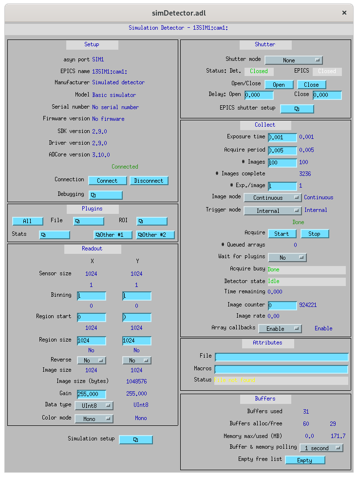The following are the controls of interest:
- All Plugins This brings up the commonPlugin described below.
- Simulation setup This brings up simDetectorSetup described below.
- Image mode Usually set to continuous.
- start and stop start and stop acquisition
- Data Type All data types work. For other than uint8 you may also want to adjust gain.
- ColorMode All work
- Gain Suggestions are 1 for simulation mode linearRamp and 255 for simulation mode peaks.
commonPlugins¶
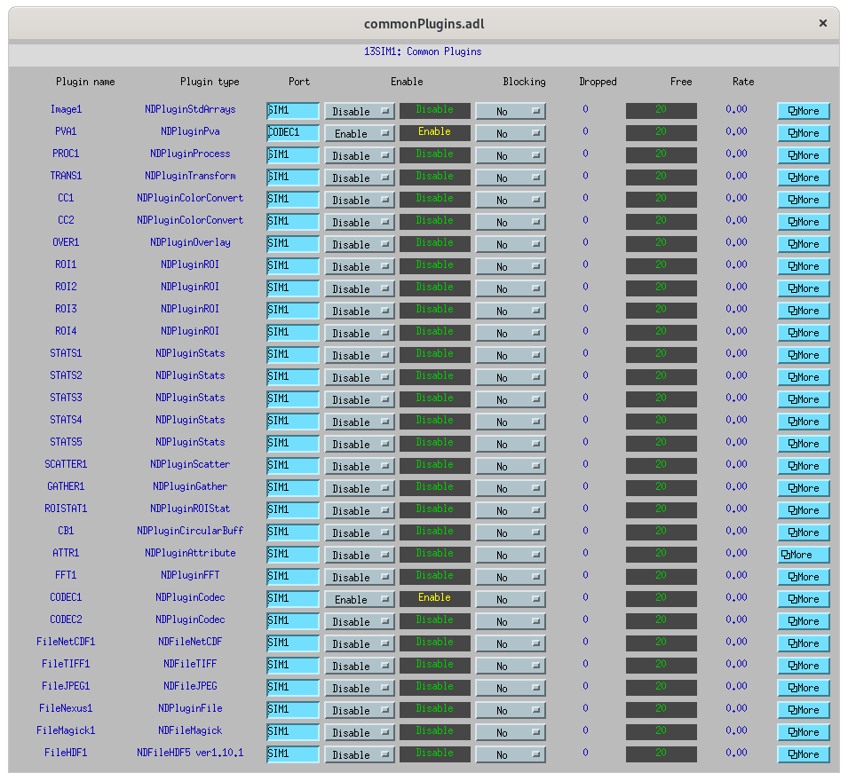The following are the ones of interest.
- PVA1 Must be enabled. Set Port to CODEC1 if you want to use codecs
- CODEC1 If you want to use codecs click on the More botton on right side of window.
NDCodec¶
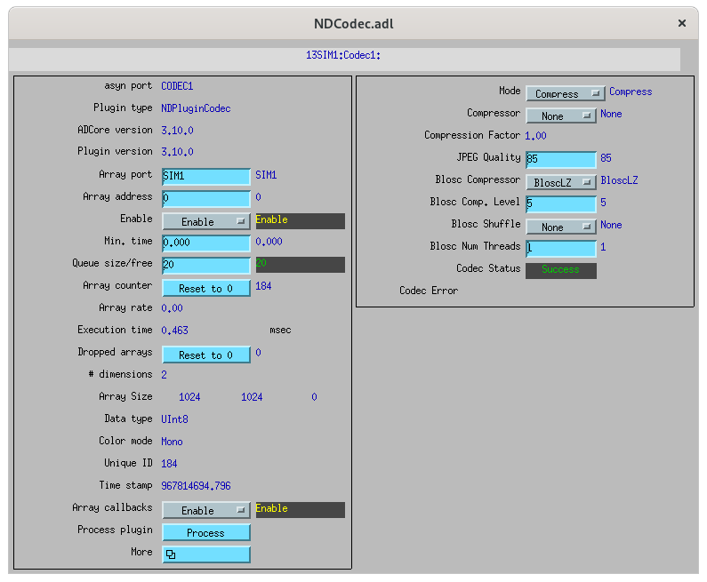This is the controller for CODEC1.
The controls of interest are:
- Enable It must be set to enable.
- Compressor Select the codec support you want.
- Blosc Compressor If Compressor is Blosc this selects type.
Simulation Setup¶
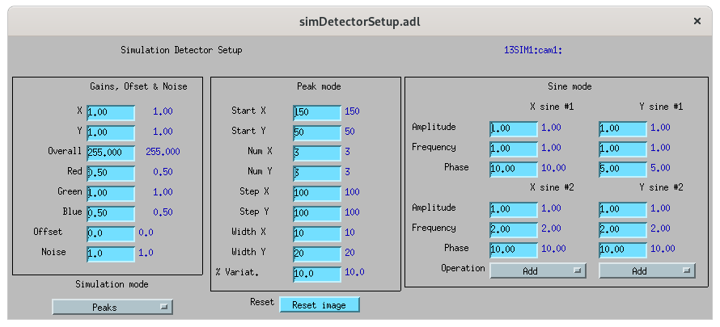This show setup options.
The options shown are the ones for the examples shown in this document.
Image Zoom¶
The following are the ways to change the part of the image that is displayed.
- mouse Use the mouse to select a subimage of the current image. That is press, drag, and release.
- zoomIn Clicking zooms in. x1, …, x16 sets zoom amount.
- zoomBack Clicking reverts to previous zoom image
- resetZoom Reverts to full image.
Color Table¶
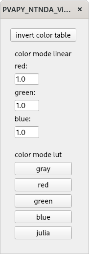This provides psudo color maps for mono images.
Note that when peak mode is being used julia color comes close to showing the actual edges of the peaks.
For example if julia is selected and the image is zoomed, I see:
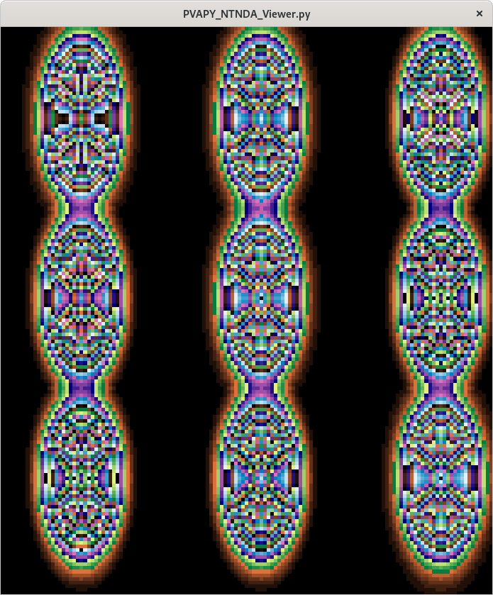Then issue mouse clicks in the image and look at the new widow that appears.
Moving the mouse in the new window shows the pixel location and value.
plot3d¶
If you have zoomed to the following:
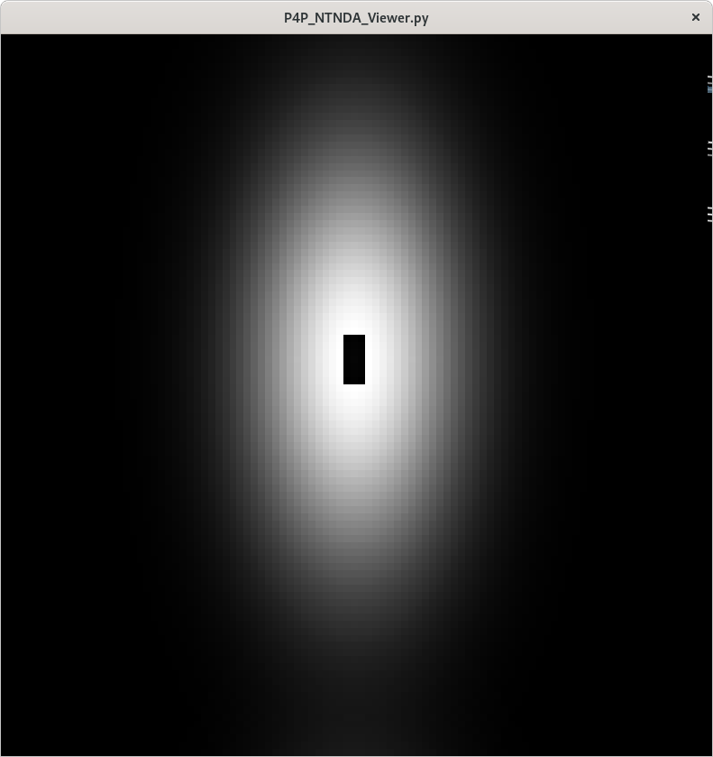And then click plot3d the following appears:
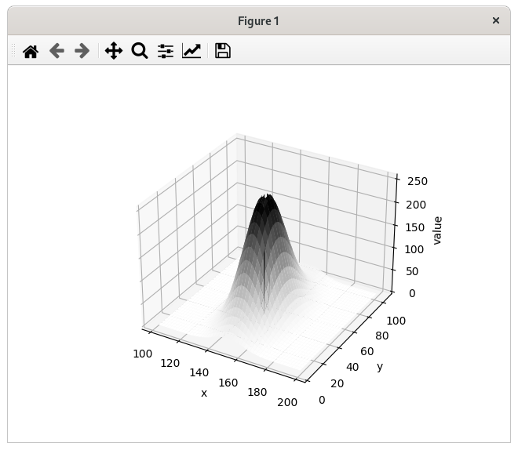Other views appear by using the mouse to grab the bottom corner of the axes and moving the mouse.
For example
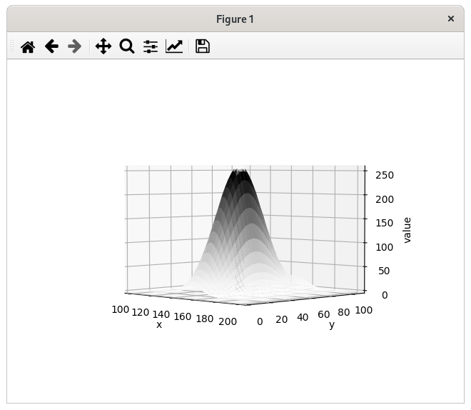Now change medm color mode to RGB1 and then zoom to :
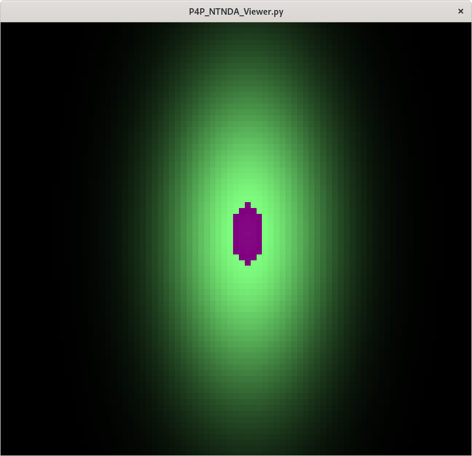And then click plot3d the following appears:
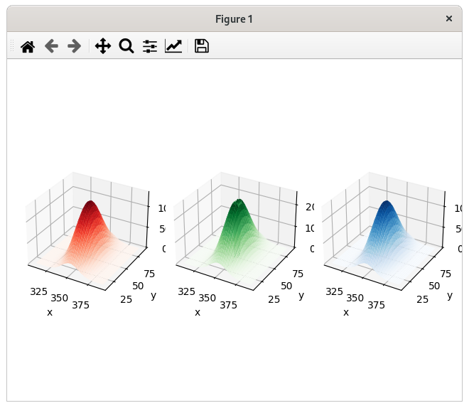Other views appear by using the mouse to grab the bottom corner of the axes and moving the mouse.
For example
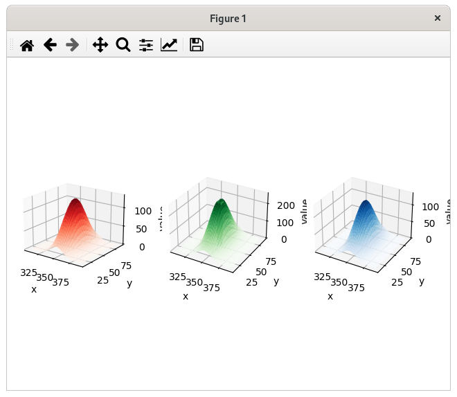Some Code Details¶
NtNDA_Viewer.py creates the control window.
It uses the following python classes:
- ChannelToImageAD Converts the data from the NTNDAArray to an image that can be passed to the next class.
- NumpyImage Displays an Image via QImage. It also has class FollowMouse.
- CodecAD Decompresses compressed data from the NTNDAArray.
- ColorTable Provides psuedo color tables for monochrome images from NTNDArray
Each provides Python documentation.
To view the documentation do the following:
mrk> pwd
/home/epics7/testPython/PY_NTNDA_Viewer
mrk> ipython
In [1]: from numpyImage import NumpyImage, FollowMouse
In [2]: from codecAD import CodecAD
In [3]: from channelToImageAD import ChannelToImageAD
In [4]: from colorTable import ColorTable
In [5]: help(NumpyImage)
...